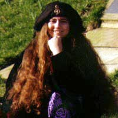
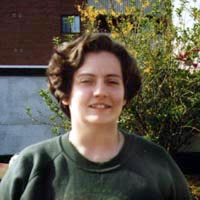
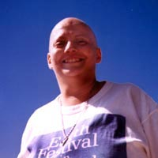
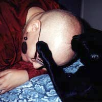
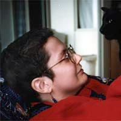

Here, as promised, are pictures of the various hairstyles
I've gone through in the past year or so. When I have time, I'll set up
a page where you can vote on your fave do.
I had long
hair from age 17 until last year. One of the worst things about
learning I had cancer was knowing the hair, which was one of my best
features and the envy of many friends, was going to go.
To minimize the
trauma, I had it cut fairly short before starting treatment in May of
1996. Everyone, including me, liked it. I may keep it around this
length once it comes back, and it will probably look close to this at
our wedding in October.
By the first
week of June, it was all gone. Pete helped me to shave off the last
wisps so I'd at least look tidy. I spent about six months with no hair,
and I became much less shy by the end, only wearing hats or my wig
around strangers.
The first new
permanent growth was really nice. Everyone loved stroking my head to
feel the fuzz, and Theo started grooming me every chance he got. I
guess he figured I hadn't looked after my old hair or it wouldn't have
fallen out...
Four months
after finishing chemo, I had my first haircut. It was nice to be among
the ranks of the normal again. The top is surprisingly curly, which is
fun.
That's all I have so far, but I'll post more pictures once I look noticeably hairier.
Menya Wolfe / March 29, 1997